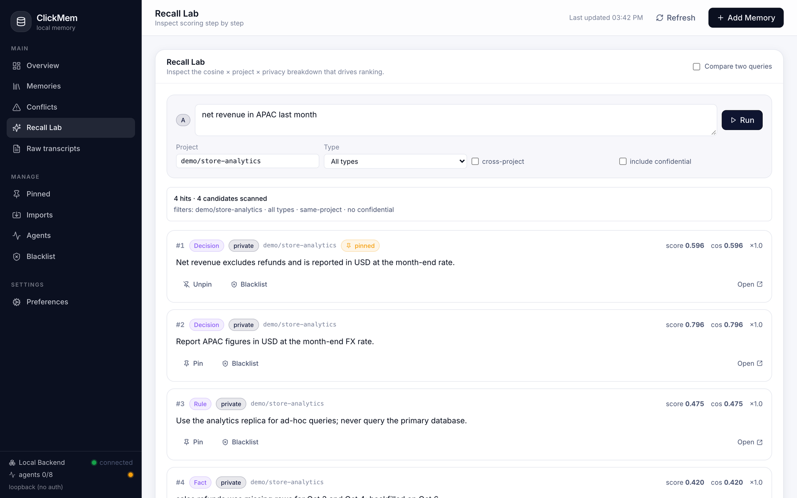

Message, Doc, Incident Table, TableVersion ToolCall, Answer Memory, Scope + vector index on text
People
ask in chat; answers and corrections come back to the same thread
4 · Data agent
Recall and check in the graph, run SQL on the warehouse, then work on the result locally:
chDB · a SQL engine inside the agent process
Uploaded files
Query the CSV or Parquet a person drops in chat
Join
Join those files with rows from the warehouse
Follow-ups
Re-slice the same result, no new warehouse query
SQL, event log
recall, checks, commits
Every source is optional · start with one channel and the pipeline, add the rest later
7
The model
Inside the agent: one query, three sources
IN MEMORY
Python(refunds)
rows the agent just fetched from the warehouse
UPLOADED IN CHAT
file('supplier_returns.csv')
a spreadsheet someone dropped in the thread
REMOTE FILE
url('…/sku_categories.parquet')
a reference file on shared storage
SELECT c.category, sum(w.refund_amount) AS warehouse_refunds, sum(u.amount) AS supplier_returns FROM Python(refunds) AS w JOINfile('supplier_returns.csv')AS u USING (order_id) JOINurl('https://…/sku_categories.parquet')AS c USING (sku) GROUP BY c.category ORDER BY warehouse_refunds DESC
No temp table in the warehouse. No load step. No extra service. chDB runs this inside the agent’s own process.
chDB = ClickHouse as an in-process library · pip install chdb · fictional file names
8
Write path
Nothing becomes memory by accident
Two ways in
1 · Agent commits
A conclusion it decided is worth keeping
2 · Person imports
Docs and rules they already trust
Everything else goes to the event log. It is evidence, not memory.
Operation
Meaning
In the graph
Add
A new belief
New Memory node
Revise
Better information arrived
New node + SUPERSEDES edge; old one kept
Retract
Stop believing it, say why
Status retracted, reason stored
Pin
This one is authoritative
Conflicting writes are rejected
Refuse
Never store this pattern
Blocklist checked on write and recall
Agent Memory Beyond Vectors · Auxten Wang
9
Write path
Catch contradictions at write time
def commit(new): peers = vector_search(new.embedding, scope=(new.project, new.kind), min_cosine=0.92) for peer in peers: if normalize(peer.text) == normalize(new.text): return merge(peer, new) if peer.pinned: raise Rejected(peer) link(new, "CONFLICTS_WITH", peer) mark_conflicted(new, peer) return save(new)
Same claim
Merge, append to history
Pinned peer
Reject; edit the pinned one on purpose
Close meaning, different claim
Link both, ask someone to resolve
Here vectors do what they are good at: detecting, not judging.
Agent Memory Beyond Vectors · Auxten Wang
10
Read path
Vectors propose, the graph decides
1 · Vector search
Top 50 candidates by meaning
2 · Graph filter
Drop superseded, retracted, out of scope
3 · Expand
Pull sources and linked facts
4 · Return a trace
Why each item was kept or dropped
Conflicts are shown, not hidden
A conflicted memory comes back with a warning attached.
Fail open
If recall is slow (about 5 s), the agent goes on without memory.
Agent Memory Beyond Vectors · Auxten Wang
11
Read path
Recall is one graph query
// Recall: the vector index proposes, the graph decides CALL db.index.vector.queryNodes('memory_embedding', 50, $embedding) YIELD node AS m, score WHERE m.status = 'active'AND NOT EXISTS { (:Memory)-[:SUPERSEDES]->(m) } AND EXISTS { (m)-[:SCOPED_TO]->(:Scope {id: $scope}) } RETURN m.text, coalesce(m.pinned, false) AS pinned, score, [(m)-[:DERIVED_FROM]->(src) | src.ref] AS sources ORDER BY pinned DESC, score DESC LIMIT 8
Check before answering
For every table the SQL will read: take its current version, walk up to three hops upstream, and look for a version with a known incident.
If something is found
The agent still answers, and says so in the answer instead of presenting the number as final.
Cypher on Neo4j 5 · vector index on Memory.embedding
12
Read path
The trace for our opening question
Candidate memory
Similarity
Scope
Status
Result
Revenue = sum of order amount
0.86
this project
superseded
Dropped
Revenue includes sales tax
0.84
another team
active
Dropped
Report APAC in USD at the month-end rate
0.80
this project
active
Kept, #2
Net revenue excludes refunds
0.60
this project
active, pinned
Kept, #1
The two most similar memories were both wrong for this question. The filter fixed the answer, not the ranking.
Illustrative numbers, fictional data · raw cosine; Neo4j reports (1 + cosine) / 2 as its score
13
Queryable memory · 1
Why did the agent say that?
One graph query walks four paths
1
From the answer to its tool call: the SQL, and the table versions it read
2
From the answer to the memories it recalled
3
From each memory to anything newer that supersedes it
4
From each memory to where it came from
Result
recalled Revenue = sum of order amount
status superseded
replaced_by Net revenue excludes refunds
came_from chat, Sep 2
sql SELECT sum(amount) FROM stg.orders …
tables stg.orders (no refunds table)
Diagnosis in one query: the answer used a superseded memory. Fix the recall filter, not the prompt.
Fictional data
14
Queryable memory · 2
The same graph holds your data lineage
SOURCES
STAGING
MARTS
USED BY
sales.orders
from the shop database
sales.refunds
payment provider export
finance.fx_rates
daily rates
stg.orders
cleaned, deduplicated
stg.refunds
matched to orders
stg.fx_month_end
one rate per month
mart.refund_rate
by category, daily
mart.net_revenue
by market, daily
3 agent answers
asked Oct 4 to Oct 6
1 memory
learned from an answer
Finance dashboard
weekly APAC view
sales.refunds · version 41
Oct 3–4: 212 of 1,348 rows
replaced by
sales.refunds · version 42
Backfill: Oct 6, 14:20 UTC
Orange = everything downstream of the bad version.
Version = one published pipeline run of a table · edges come from pipeline run events · fictional data
15
Queryable memory · 2
One incident, as the graph sees it
reports
announces
describes
affects
replaces
mentions
built from
reads
derived from
CHAT · Oct 6, 09:10
#data-eng: “Refund counts look low.”
CHAT · Oct 6, 14:20
#data-eng: “Backfill is live.”
DOC · Google Drive
Refunds backfill: cause and fix
INCIDENT · INC-2317
Refunds incomplete, Oct 3–4
TABLE VERSION
sales.refunds v41 212 of 1,348 rows
TABLE VERSION
sales.refunds v42 backfill, Oct 6
TABLE VERSION
mart.refund_rate Oct 5 build
AGENT ANSWER · Oct 5
Refund rate by category, for Ops
MEMORY
“Outdoor refund rate is about 2.6%”
Purple: from chat
Blue: from the shared drive
White and yellow: warehouse and agent
Each tool knew one piece. The graph is where the message, the doc, the table and the answer meet.
Fictional example · every node keeps a link to its source row or file
16
Queryable memory · 2
What did the bad data touch?
MATCH (:Incident {id: 'INC-2317'})-[:AFFECTS]->(bad:TableVersion) MATCH (bad)<-[:BUILT_FROM*0..3]-(v:TableVersion)<-[:READ]-(call:ToolCall) MATCH (call)-[:PRODUCED]->(a:Answer) OPTIONAL MATCH (m:Memory)-[:DERIVED_FROM]->(a) RETURN a.asked_at, a.question, a.asked_by, collect(DISTINCT m.text) AS memories_to_review
Asked
Question
Asked by
Memory learned from it
Oct 4
APAC net revenue, week to date
Regional finance
none
Oct 5
Refund rate by category, last 7 days
Operations
“Outdoor refund rate is about 2.6%”
Oct 6
Top products by net revenue, last 7 days
Merchandising
none
Three answers to re-run, three people to tell, and one memory to retract.
Fictional results
17
Queryable memory · 2
Close the loop where people asked
# ops-analytics · thread
Operations lead · Oct 5, 10:02
@data-agent refund rate by category, last 7 days?
Data agent
Outdoor 2.6% · Home 2.8% · Apparel 4.1%
Source: mart.refund_rate, refreshed 06:10 · Why this answer?
Operations lead
Thanks. Remember the Outdoor number as our baseline.
Data agent
Saved for the Ops team: “Outdoor refund rate is about 2.6%.”
Data agent · Oct 6, 14:35
Correction: this answer used incomplete refunds data (INC-2317).
After the backfill, Outdoor is 3.4%, not 2.6%.
I retracted the saved baseline. See what changed
What each chat event becomes
In chat
In the system
Mention
Question, answer and SQL in the log
“Why this answer?”
The provenance query, as a reply
“Remember this”
A memory, scoped to the team
Reply, thumbs-down
Feedback linked to the answer
Data fixed, marts rebuilt
A correction in every affected thread
Generic chat mock-up · the same events exist in Slack and similar tools
18
Queryable memory · 3
Is memory helping or hurting?
SELECT toStartOfWeek(ts, 1) AS week, count() AS answers, avgIf(corrected, used_memory) AS with_mem, avgIf(corrected, NOT used_memory) AS without, countIf(has(recalled_status, 'superseded')) AS stale FROM agent.answers GROUP BY week ORDER BY week
Result
Week
Count
With
Without
Stale
Oct 12
412
6.1%
9.8%
14
Oct 19
438
5.4%
10.1%
11
Oct 26
447
5.8%
9.9%
12
Nov 2
451
3.2%
9.6%
1
With / Without: share of answers later corrected. The recall filter shipped Nov 2, after our opening answer.
Plain analytics over the event log. Before a change ships, replay last month’s confirmed questions with and without it.
Illustrative numbers · plain SQL over the event log · agent.answers is a view over agent.events
19
Putting it together
What goes where
What
Event log
Context graph
Vector index
Tool calls, SQL, results
Everything
Links, for provenance
No
Corrections, feedback
Everything
Promoted to memory
Memory text only
Decisions, definitions
When made
Yes, with scope
Yes
Table lineage, data incidents
When they happen
Yes, versioned
No
Raw chat transcripts
Kept cold
As evidence, never as memory
No
Secrets, personal data
Redacted
No
No
Log everything cheaply. Promote little, on purpose. Embed only what you promoted.
Agent Memory Beyond Vectors · Auxten Wang
20
Putting it together
Make recall visible to people, too

Pinned wins
The finance definition ranks #1 at 0.596, above a 0.796 match.
Filtered out
The old revenue note and the other team’s note never appear.
Explained
Each hit shows its type, scope, privacy and score.
Screenshot: ClickMem (open source), Recall Lab · fictional demo data
21
Design choices
Three kinds of question, three engines
WHAT HAPPENED
Columnar store
here: ClickHouse
Raw messages, docs, pipeline events, every agent step.
Why it fits
Compresses column by column, so keeping everything is cheap. Aggregates fast.
HOW THINGS CONNECT
Graph database
here: Neo4j
Supersedes, scope, source, lineage.
Why it fits
The answer is a path: why did it say that, what did the bad data touch.
WHAT SOUNDS RELATED
Vector index
here: inside the graph
Text that means the same in different words.
Why it fits
Fuzzy search proposes candidates. It does not decide.
Each engine does one job well. Pick the store by the question it has to answer.
And inside the agent: chDB, the same SQL engine in-process, for files and local results.
Any columnar store, graph database or vector index you already run can play these roles
22
Takeaways
Four things to take home
1
Vectors find candidates. They don’t decide what is true.
2
Give memory edges: supersedes, conflicts with, derived from, scoped to. Connect them to data lineage.
3
Log everything; promote to memory on purpose, never by accident.
4
Make “why did it say that?” one query away, and replay before you trust.
Strong models make agents easy to build: almost everyone gets to 80. An agent a business can rely on needs 90, and that gap is a reliable data foundation, not a bigger model.
Agent Memory Beyond Vectors · Auxten Wang
23
Thank you
Questions?
github.com/auxten/clickmem · the memory layer from the screenshot
github.com/chdb-io/chdb · ClickHouse as an in-process library
Auxten Wang · ClickHouse
· ← → to navigate · N for speaker notes · auxten.com